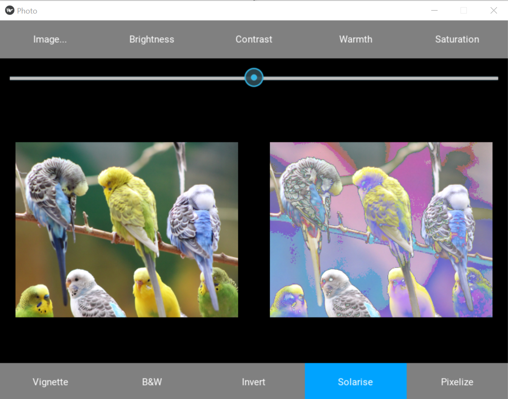
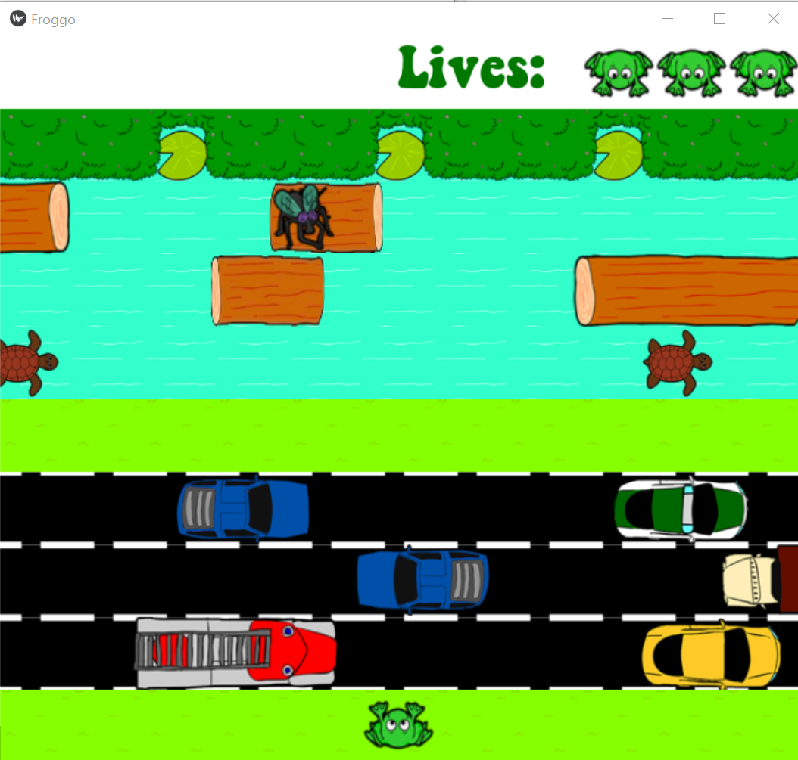

Lucy Beck
Computer Science Student at Cornell University
As an undergraduate student studying computer science at Cornell University, my technical skills include extensive knowledge of object-oriented programming and graphical user interfaces (GUIs). I also have experience in web design and version control.
Featured Projects
View selected projects below. More information can be found on my Github.
Photo Editor

Photo Editor allows the user to upload any PNG file and adjust brightness, contrast, warmth, saturation, and apply a variety of photo filters such as Vignette, Black and White, Invert, Solarise, and Pixelize. I developed a GUI that displays the original image and the edited image side by side as the user is applying his or her eidts. I designed the filters by using mathematical algorithms to manipulate pixel data in the form of RGB and HSV values. I also implemented an edit history that tracks up to 50 modifications, allowing the user to undo and reset edits to an image. All code was written in Python.
Froggo

Froggo is a clone of the 1981 arcade game Frogger. The modern day equivalent to Frogger is Crossy Road. To play Froggo, use the up, down, left, and right arrow keys to move the frog. The frog will lose a life if it is hit by a car, drowns in the water, or is carried offscreen by a moving turtle or log. If the frog lands on a fly, one life will be added. All lily pads must be occupied by a safe frog to move on to the next level. I designed seven levels that support JSON files, audio, 2D graphics with hitboxes, and scheduled events. I also utilized property decorators, generators, and coroutines to create model classes that support 2D animation. All code is written in Python and follows the model-view-controller design pattern.
Professional Experience
Perioperative Care Technician
Northwestern Medicine - Winfield, IL
Jun 2020 - Sep 2020
- Monitored and recorded vital signs and glucose levels before and after surgery for up to 30 patients of all ages daily
- Collected, labeled, and transported specimens, including blood, sputum, urine, and fecal samples, to the laboratory
- Sterilized equipment before and after use, maintained use records, and ensured that items were properly stored between uses
- Updated paper and electronic medical records regarding patient information while complying with HIPAA regulations
Swim Instructor
Swim With Bill - Bartlett, IL
Mar 2017 - May 2020
- Taught swimming techniques, swimming strokes, and water safety rules to students ages 0-14
- Planned private swimming lessons that successfully matched students’ abilities and progressive development
- Communicated regularly with participants and their guardians to update them on their swimming progress
- Ensured clean and safe environment in the water and on the pool deck to ensure the safety and well-being of patrons
Leadership Experience
Associate
Cornell Equity Research - Cornell University
Sep 2020 - Present
- Research public companies in the healthcare sector and formulate investment theses and recommendations
- Utilize charts, formulas, and functions in Microsoft Excel to visually represent and analyze financial data
- Publish semi-annual equity research reports aimed to help investors make better informed research decisions
Student Body President
Class Council - Bartlett High School
May 2018 - May 2019
- Collaborated with faculty and administration to plan and facilitate schoolwide events for 2,000+ students
- Served as a student advocate by articulating the needs, desires, interests, and concerns of the student body
- Developed the agenda for and presided over bi-weekly general body meetings and officer meetings
Board Member
Helath Occupations Students of America - Bartlett High School
May 2018 - May 2020
- Placed 1st in Illinois for 2 consecutive years and was an International Finalist for the Physical Therapy event
- Directed, produced, and starred in a public service announcement video on preventing tobacco use that placed 1st in Illinois
- Fundraised $1000+/year and organized the travel agenda for state to international competitions for 100+ members
Education
Cornell University - Ithaca, NY
Bachelor of Arts - BA, Computer Science | GPA: 4.09/4.3 | Dean’s List
Aug 2020 - May 2024
Relevant Coursework: Computing Using Python, Object-Oriented Programming & Data Structures, Probability Models & Inferences, Linear Algebra

Bartlett High School - Bartlett, IL
High School Diploma | GPA: 4.7/5.0 Weighted, 4.0/4.0 Unweighted
Aug 2016 - May 2020